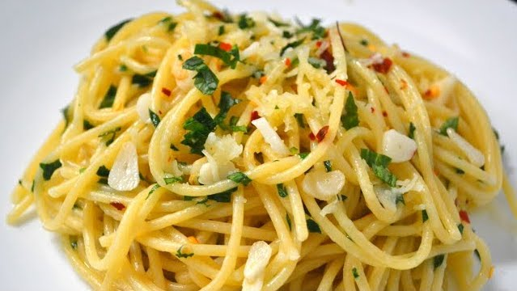

Lazy Pasta (1 Serving)
Ingredients:
- 3–4 garlic cloves (more if you like it garlicky)
- 2 tablespoons olive oil
- 1 tablespoon butter
- ¼ cup grated Parmesan cheese (or more, to taste)
- ½ teaspoon black pepper (adjust to taste)
- ¼ teaspoon crushed red pepper flakes (optional, for heat)
- 100g (about 3.5 oz) spaghetti or any pasta of your choice
- Salt (for pasta water and seasoning)
Instructions
- Prepare the Garlic Confit: Peel and thinly slice 3–4 garlic cloves. In a small pan, heat 2 tablespoons olive oil over low heat. Add the garlic and cook slowly until it turns golden and fragrant, about 5–7 minutes. Be careful not to burn the garlic. Remove from heat and set aside.
- Cook the Pasta: Bring a pot of salted water to a boil. Add 100g spaghetti and cook until just al dente, according to the package instructions.
-
Prepare the Sauce Base: While the pasta cooks, mix
the following in a large heat-safe bowl:
- 1 tablespoon butter (let it soften or melt)
- ¼ cup grated Parmesan cheese
- ½ teaspoon black pepper
- ¼ teaspoon crushed red pepper flakes (optional)
- Combine Everything:Once the pasta is done, reserve a small cup of pasta water and drain the rest. Do not rinse the pasta; leave it slightly wet. Add the hot pasta directly to the bowl with the sauce base. Pour the garlic confit (along with the oil) over the pasta.
- Mix and Adjust: Toss everything together until the butter melts, the cheese coats the pasta, and the ingredients are well combined. Add a splash of reserved pasta water if needed to create a silky sauce. Adjust salt and seasoning to taste.
- Serve and Enjoy: Serve immediately, with extra Parmesan on top if desired.
Rate and Comment